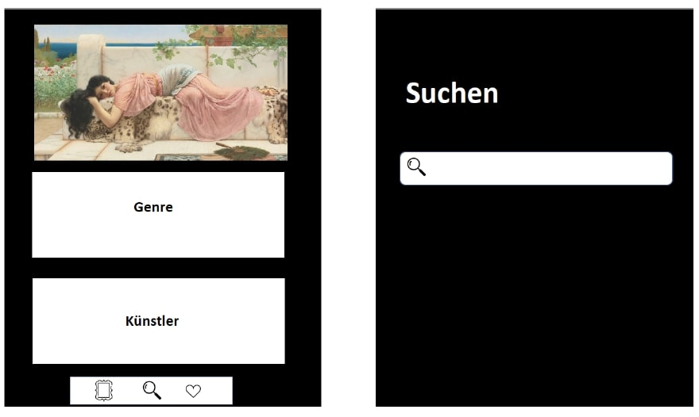
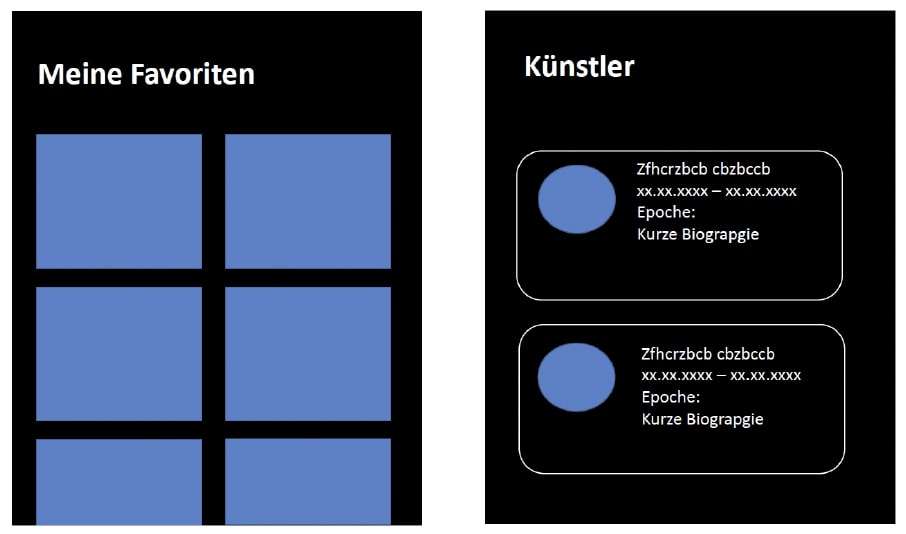
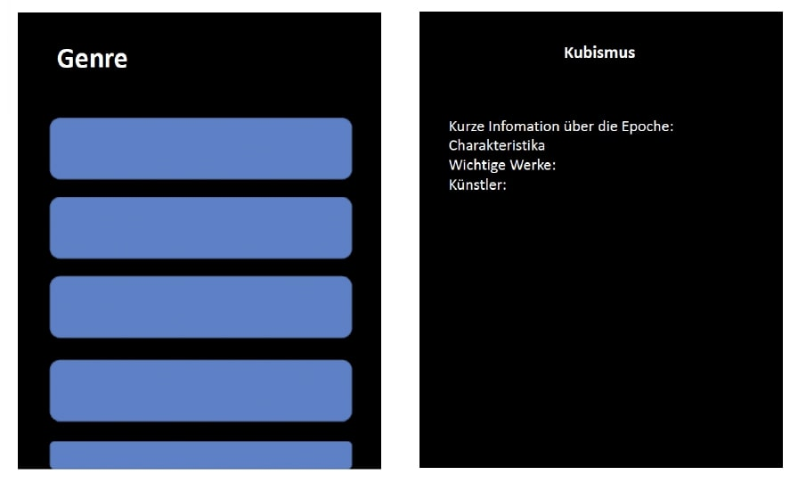
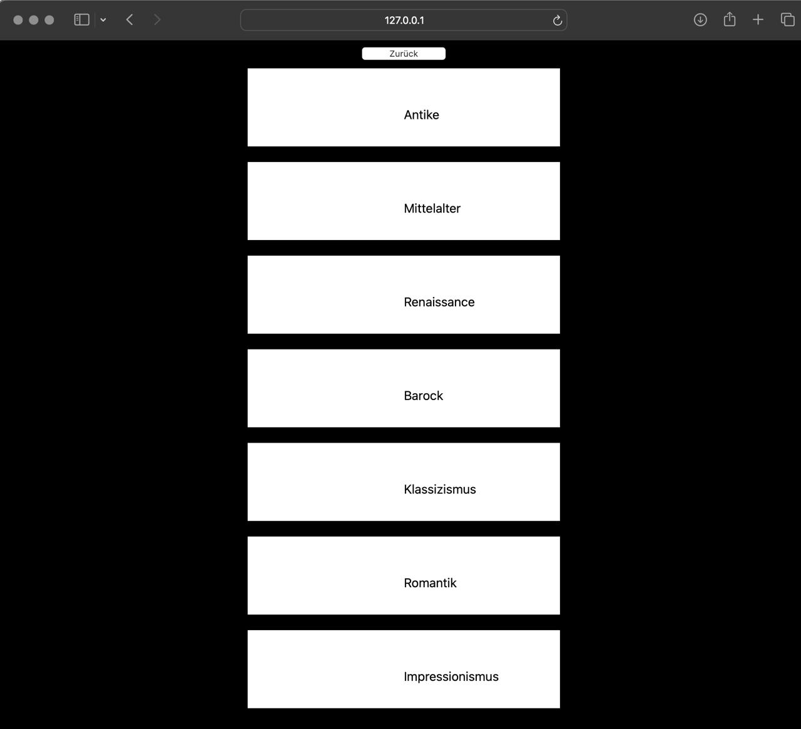

Herzlich Willkommen auf unserer ArtHub Seite!
Auf dieser Seite stellen wir unsere App vor. Wenn man auf das Inhaltsverzeichnis klickt, gelangt man zu den jeweiligen Kategorien :-)
Auf dieser Seite stellen wir unsere App vor. Wenn man auf das Inhaltsverzeichnis klickt, gelangt man zu den jeweiligen Kategorien :-)
Navigation:
- Hauptmenü und Untermenüs
- Suchleiste
Suchfunktion:
- für Kunstwerke und Künstler
- Anzeige der Suchergebnisse
Detailansicht:
- Informationen zu Kunstwerken (Titel, Künstler, Epoche, Beschreibung)
- Informationen zu Künstlern
Favoritenfunktion mit dem Herz-Button:
- Hinzufügen und Verwalten von Favoriten
Durch den “Herz"-Button haben Benutzer die Möglichkeit, Kunstwerke, Künstler oder Epochen als Favoriten zu markieren. Somit können sie eine eigene Sammlung bevorzugter Werke erstellen und schnell darauf zugreifen. Das könnte hilfreich sein, um zum Beispiel eine Zusammenstellung von persönlich ausgewählten Werken zu erstellen, die inspirierend wirken, oder um Informationen auf schnellere und einfachere Weise zusammenzutragen.
Die erste Reihe zeigt unsere Designidee. Von der Startseite zur Hauptseite und der Favoritenliste. Das untere Bild zeigt unsere derzeitige Umsetzung.
    Zurück zur HauptseiteUnser Datenmodell erfolgt nach erfolgreicher Umsetzung unserer App. :-)
Zurück zur Hauptseitehttps://doi.org/10.20378/irb-92691
2) STARK Abitur-Wissen - Kunst Band 1 + 2. (2019). STARK.https://www.stark-verlag.de/media/muster/YKU01s1.pdf
3) Kunst - Unterrichtsfertige Künstler-Steckbriefe mit Arbeitsaufträgen im Paket. (o. D.).https://www.google.com/url?sa=t&source=web&rct=j&opi=89978449&url=https
4) Parks, J. A. (2016). Kunst verstehen von A - Z: Analyse . Technik . Praxis.https://www.reimer-mann-verlag.de/pdfs/101550_2.pdf
YouTube. https://www.youtube.com/watch?v=l9u_vm9aAmM
2) Bühler, P., Schlaich, P. & Sinner, D. (2023). HTML und CSS. In Bibliothek der Mediengestaltung.https://doi.org/10.1007/978-3-662-66663-0
3) Häberlein, T. (2024). Programmieren mit Python. In Springer eBooks.https://doi.org/10.1007/978-3-662-68678-2
4) Dörn, S. (2020). Python lernen in abgeschlossenen Lerneinheiten. In Springer eBooks.https://doi.org/10.1007/978-3-658-26496-3
Zurück zur HauptseiteInhalt von Seite 6.
Zurück zur Hauptseite